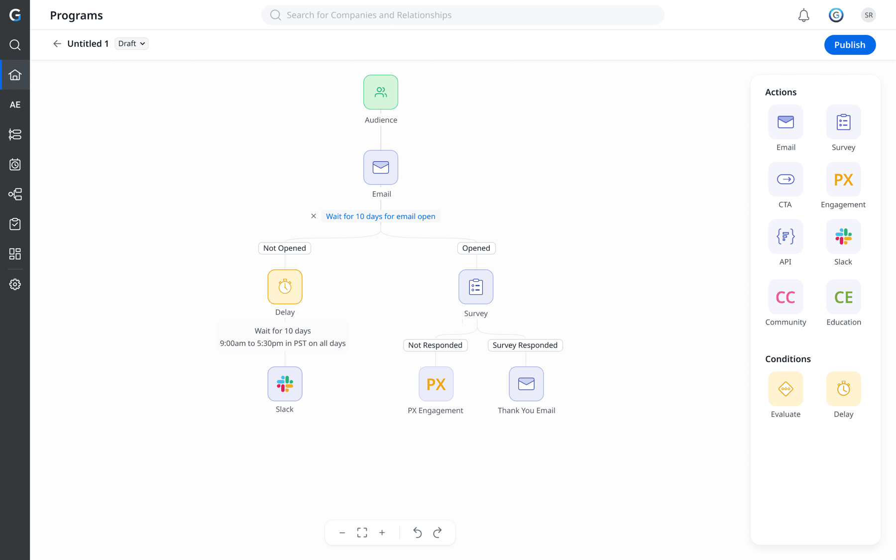

Selected case studies
Each project starts with an organizational problem, not a screen — research and stakeholder alignment, strategic decisions, and measurable outcomes. Here's a closer look at three.

Journey Orchestrator — rebuilding the Program Builder
Led research, stakeholder alignment and design for a ground-up rebuild — drag-and-drop authoring, AI-powered inline source creation, versioning, testing and dynamic timezones. Result: −58% setup time and a doubling of monthly customer growth.
Read the case studyProgram Versioning
A three-phase, multi-quarter platform initiative letting admins safely edit live programs — a copy-based draft model that shipped 100+ tickets with zero active-program disruptions.
Read the case studyProgram Testing
Authored the PRD and designed a dry-run simulation that made publishing feel safe for the first time — a disciplined vision-vs-MVP story shipped with zero live side effects.
Read the case studyAccessibility at Scale
Initiated and led a company-wide accessibility program — strategy, vendor management, design-system governance, engineering alignment and customer retention — through to VPAT certification.
Read the case studyLooking for design leadership that drives outcomes?
I help teams turn ambiguous, organization-wide problems into strategy, aligned roadmaps, and shipped products.
Start a conversation